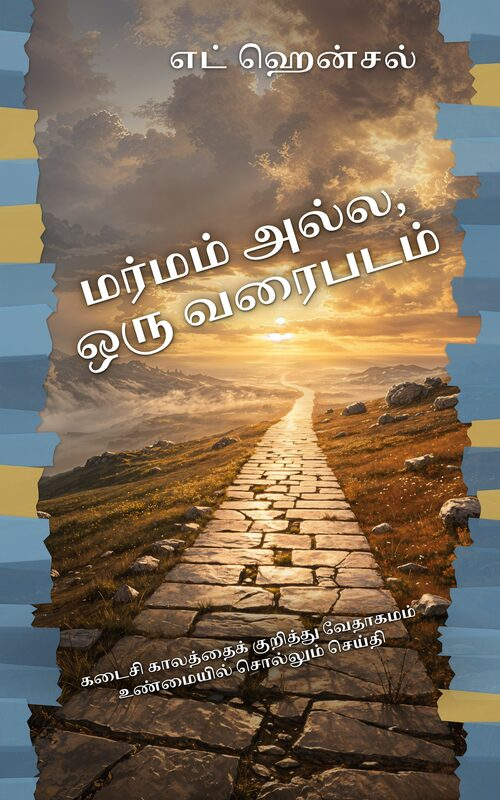

மர்மம் அல்ல, ஒரு வரைபடம்
‘இரத்த நிலா’ நாட்காட்டிகள், எடுத்துக்கொள்ளப்படுதலுக்கான கவுண்ட்டவுன்கள், திரும்பத் திரும்பத் திருத்தப்படும் தீர்க்கதரிசன அட்டவணைகள் — இவற்றால் சோர்ந்துபோயிருக்கிறீர்களா?
மர்மம் அல்ல, ஒரு வரைபடம் — கடைசி காலத்தைப் பற்றிய ஒரு பிரசங்கத்தைக் கேட்டுவிட்டு, நம்பிக்கையைவிட அதிகக் குழப்பத்துடன் திரும்பிய ஒவ்வொரு கிறிஸ்தவருக்குமான புத்தகம் இது.
1830-களில் ஜான் நெல்சன் டார்பி முற்றிலும் வேறுபட்ட ஒரு கருத்தை அறிமுகப்படுத்துவதற்கு முன்பு, பதினைந்து நூற்றாண்டுகளாகக் கிறிஸ்தவ சிந்தனையின் முதன்மை நீரோட்டமாக இருந்த, ஒன்றோடொன்று பிணைந்த மூன்று கண்ணோட்டங்களின் மேல் இந்நூல் கட்டப்பட்டுள்ளது. இன்று எதிர்காலத் தீர்க்கதரிசனமாகச் சொல்லப்படுவதில் பெரும்பகுதி, தேதி குறிக்கக்கூடிய, உறுதிசெய்யப்பட்ட வரலாற்றில் ஏற்கெனவே நிறைவேறிவிட்டது என்பதை இது காட்டுகிறது — அது உங்கள் நம்பிக்கையைக் குறைப்பதில்லை; இன்னும் பெரியதாகவும், உறுதியானதாகவும், மகிழ்ச்சி நிறைந்ததாகவும் ஆக்குகிறது.
நீங்கள் கண்டறியப்போவது:
- மத்தேயு 24 — வசனம் வசனமாக
- கி.பி. 70-இல் எருசலேம் வீழ்ந்ததைப் பற்றி நேரில் கண்டவர்கள் தரும் விறுவிறுப்பான விவரம்
- மிருகம் யார், 666 என்பதன் பொருள் என்ன
- கிறிஸ்து இப்போதே அரசாளுகிறார் என்ற நிகழ்கால ஆயிரவருடக் கொள்கையின் விளக்கம்
- ரோமர் 9 முதல் 11 வரை: இஸ்ரவேல் மக்களிடம் தேவன் காட்டும் மாறாத உண்மைத்தன்மை
- இனி வரவிருக்கும் நான்கு பெரிய உண்மைகள்: கிறிஸ்துவின் சரீரப்பிரகாரமான இரண்டாம் வருகை, மரித்தோர் அனைவரின் உயிர்த்தெழுதல், இறுதி நியாயத்தீர்ப்பு, புதிய படைப்பு
சிறு குழுக்களுக்கு ஏற்றது: ஒவ்வொரு அதிகாரத்தின் முடிவிலும் சிந்தனைக்கும் கலந்துரையாடலுக்குமான கேள்விகள் உள்ளன.
ஒலிப்புத்தகத்தை இலவசமாகக் கேளுங்கள்
முழுமையான பதிப்பு, அதிகாரம் அதிகாரமாக
தமிழ் ஒலிப்புத்தகம் விரைவில் YouTube-இல் வெளியாகும்.
பொருளடக்கம்
- முன்னுரை
- அதிகாரம் 1 மர்மம் அல்ல, ஒரு வரைபடம்
- அதிகாரம் 2 இயேசு வாசித்ததுபோலவே தீர்க்கதரிசனத்தை வாசிப்பது எப்படி
- அதிகாரம் 3 அனைத்தையும் திறக்கும் மூன்று திறவுகோல்கள்
- அதிகாரம் 4 “இந்தச் சந்ததி”
- அதிகாரம் 5 ஒலிவமலைப் பிரசங்கம்
- அதிகாரம் 6 வரலாறு தீர்க்கதரிசனத்தை உறுதிப்படுத்தியபோது
- அதிகாரம் 7 மேகங்கள்மேல் வருதல்
- அதிகாரம் 8 கர்த்தருடைய நாள் இன்னும் வரவில்லை
- அதிகாரம் 9 வெளிப்படுத்தின விசேஷத்தைத் திறக்க: எழுதப்பட்ட காலத்திலிருந்து தொடங்குங்கள்
- அதிகாரம் 10 பாபிலோன், மிருகம், 666 — புதிருக்கு விடை
- அதிகாரம் 11 ஆயிரம் வருடங்கள்
- அதிகாரம் 12 ஒரே ஒலிவமரம், ஒரே குடும்பம்
- அதிகாரம் 13 தானியேலின் எழுபது வாரங்கள்
- அதிகாரம் 14 தேசம், தேவாலயம், வாக்குத்தத்தங்கள்
- அதிகாரம் 15 கர்த்தருடைய நாள்
- அதிகாரம் 16 ஏற்கனவே, ஆனால் இன்னும் இல்லை
- அதிகாரம் 17 இனி வரவிருப்பவை
- அதிகாரம் 18 சிறந்த பார்வை, சிறந்த வாழ்க்கை
- முடிவுரை
- பின்னிணைப்பு
ஆசிரியரைப் பற்றி
எட் ஹென்சல் 1979 முதல் போதகராகவும் சுவிசேஷகராகவும் ஊழியம் செய்து வருகிறார். அவர் பிரசங்கிக்கிறார், போதிக்கிறார், வீட்டுச் சபைகளைத் தொடங்க உதவுகிறார். விசுவாசிகளுக்குக் கடைசி காலத்தைப் பற்றிய தெளிவான, வேதாகம அடிப்படையிலான, நம்பிக்கை நிறைந்த வரைபடத்தைக் கொடுப்பதற்காக இந்த நூலை எழுதினார்.
வேதாகம மேற்கோள்கள் இந்தியன் ரிவைஸ்டு வெர்ஷன் (IRV) தமிழ் வேதாகமத்திலிருந்து எடுக்கப்பட்டவை, © 2017, 2019 Bridge Connectivity Solutions Pvt. Ltd., Creative Commons Attribution-ShareAlike 4.0 உரிமத்தின் கீழ். சிறு அச்சுப் பிழைகள் திருத்தப்பட்டுள்ளன.